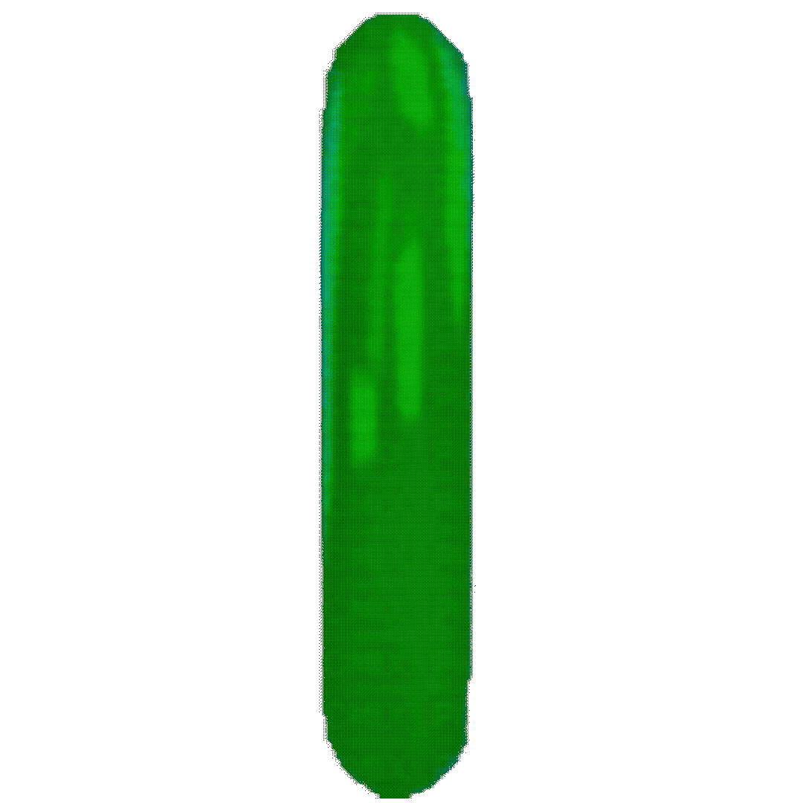

CENARIOS E MAPAS
Sistema de Mapa Rotativo com Efeitos
Seus mapas funcionarão em um ciclo, garantindo que o local da ação mude regularmente. O elemento chave é a adição de efeitos especiais que alteram a jogabilidade (gameplay) em momentos específicos.
- Mapa Rotativo:O sistema garante que a arena de jogo (mapa) mude em intervalos definidos.
- Efeitos Especiais: Os mapas não são estáticos; em algum momento da rodada, um efeito especial ou múltiplos efeitos especiais serão ativados.
Esses efeitos têm o potencial de mudar drasticamente a dinâmica da partida:
- **Mudanças Ambientais:** Chuva forte, neblina, escuridão total, gravidade baixa.
- **Modificadores de Personagem:** Aumento temporário da velocidade para um personagem, redução do dano de um tipo específico de ataque, ou regeneração de energia acelerada.
- **Eventos de Área:** Uma zona do mapa se torna perigosa (ex: eletrocutada, em chamas) ou uma nova rota secreta é aberta.
O sistema introduz um elemento de imprevisibilidade e exige que os jogadores se adaptem constantemente, tanto ao novo mapa quanto aos modificadores ativos.
Cenários
Abaixo estão os cenários disponíveis no jogo, incluindo suas características e mecânicas:
-
 Green Hill
"𝐨𝐮𝐭𝐫𝐨𝐫𝐚 𝐜𝐡𝐚𝐦𝐚𝐝𝐨 𝐥𝐚𝐫."
Green Hill
"𝐨𝐮𝐭𝐫𝐨𝐫𝐚 𝐜𝐡𝐚𝐦𝐚𝐝𝐨 𝐥𝐚𝐫."
Descrição
Green Hill, como o nome já anuncia, é uma vasta região verdejante tomada por gramados vivos, palmeiras que balançam ao vento, tochas Tiki que iluminam a noite e pequenos Mobianos conhecidos como flickies, que antes sobrevoavam o céu em bandos alegres. Durante muito tempo, esse lugar foi lembrado como o lar de Sonic e seus amigos, um cenário vibrante repleto de cor, energia e uma sensação constante de aventura, interrompida apenas pela aparição isolada de algum Badnik perdido. Após os eventos de Outcome Memories, porém, Green Hill sofreu uma transformação drástica. Aquilo que era um paraíso luminoso tornou-se um ermo silencioso, despido de movimento, com a vida drenada de suas colinas. O verde perdeu o brilho, o solo parece cansado e o ar, antes leve, agora permanece pesado, como se a própria região estivesse presa em um estado eterno de estagnação.
Mecânicas:
Durante o evento 80 or Less, tempestades violentas começam a se formar rapidamente sobre a área. Relâmpagos caem em intervalos curtos, percorrendo o mapa como chicotes de luz. Se um sobrevivente for atingido, sua velocidade é reduzida, ele recebe um efeito de queimadura por 3 segundos e sofre uma drenagem acelerada de vida que, ao final, remove 35 pontos de vida. Caso um executor seja atingido, ele é atordoado por 2 segundos e também recebe o efeito de queimadura. Esse atordoamento pode acabar desencadeando o Ragemode de 2011X, tornando a situação ainda mais perigosa para todos ao redor.
-
 You Can't Run
"𝐀𝐪𝐮𝐢𝐥𝐨 𝐬𝐞𝐦𝐩𝐫𝐞 𝐯𝐚𝐢 𝐭𝐞 𝐚𝐥𝐜𝐚𝐧ç𝐚𝐫."
You Can't Run
"𝐀𝐪𝐮𝐢𝐥𝐨 𝐬𝐞𝐦𝐩𝐫𝐞 𝐯𝐚𝐢 𝐭𝐞 𝐚𝐥𝐜𝐚𝐧ç𝐚𝐫."
You Can't Run é uma usina de energia industrial.
Descrição
You Can’t Run é uma usina de energia com tema industrial inspirada na Scrap Brain Zone de Sonic the Hedgehog 1. O mapa é extremamente labiríntico, com portas automáticas que levam a corredores longos, pequenas salas ou a uma grande área aberta no centro, que funciona como o núcleo principal do mapa. Dentro de algumas salas, há computadores, tubulações, prateleiras, caixas e escadas. O piso e as paredes da instalação são totalmente metálicos, sem qualquer sinal de vida orgânica. Algumas salas também contêm um gás vermelho que preenche o ambiente e cria um brilho avermelhado, combinando com o céu vermelho visível do lado de fora. Há várias portas de saída distribuídas pelo mapa, funcionando como substitutas do anel de escape presente em outros cenários.
mecânicas
Atualmente, este é o único mapa que possui múltiplas saídas abertas ao mesmo tempo, totalizando três. Durante o modo 80 or Less, certas áreas do mapa passam a liberar gás vermelho que distorce sua visão. Quando o modo é ativado, o Núcleo de YCR entra em estado crítico, provocando uma explosão que consome toda a instalação conforme o tempo se esgota, além de vaporizar quaisquer sobreviventes que entrarem em contato com ela. Executores são imunes à explosão.
-
 **X's Castle**
"𝐄𝐬𝐭á 𝐪𝐮𝐢𝐞𝐭𝐨..."
**X's Castle**
"𝐄𝐬𝐭á 𝐪𝐮𝐢𝐞𝐭𝐨..."
Descrição:
O mapa aparece como uma masmorra escura e sombria, provavelmente construída por Eggman, como visto pelos badniks quebrados, mas que parece ter sido tomada por 2011X. Ele possui um teto completamente preto, sombras densas, chão quadriculado, paredes roxas, tochas fracas que se tornam azuis em circunstâncias específicas, grandes tapetes e cortinas vermelhas, lustres iluminados por velas, grades de ferro e pilares gigantes que se estendem infinitamente, junto de salas ocasionais que mostram o mundo exterior. Há muitas vinhas nas paredes e também estátuas de Eggman ou 2011X. O mapa não parece ser baseado em nenhuma zona específica de Sonic, embora haja referências sutis à Marble Zone, como lava visível atrás de janelas gradeadas em escadarias.
Mecânicas:
Atualmente, este mapa não possui perigos reais. Contudo, ele tem uma mecânica de OVERTIME. Ela pode ser ativada após os 80 segundos iniciais durante a sequência de fuga, substituindo a palavra original por “OVERTIME” e concedendo 17 segundos extras para escapar pelo anel antes que ele se feche completamente.
-
 Not Perfect
"𝐔𝐦 𝐥𝐮𝐠𝐚𝐫 𝐨𝐮𝐭𝐫𝐨𝐫𝐚 𝐜𝐡𝐚𝐦𝐚𝐝𝐨 𝐞𝐬𝐩𝐞𝐜𝐢𝐚𝐥..."
Not Perfect
"𝐔𝐦 𝐥𝐮𝐠𝐚𝐫 𝐨𝐮𝐭𝐫𝐨𝐫𝐚 𝐜𝐡𝐚𝐦𝐚𝐝𝐨 𝐞𝐬𝐩𝐞𝐜𝐢𝐚𝐥..."
NOT PERFECT se apresenta como um mundo imaginário brilhante e colorido.
Descrição
O mapa é repleto de muitos bumpers que podem quicar o jogador. Há muitas molas coloridas que mudam rapidamente de cor sempre que você as toca. O ambiente é cheio de plataformas flutuantes, blocos, corações giratórios, pássaros esmeralda voadores, e grandes plataformas cobertas que servem como ponto de acampamento (camp spot) para os Sobreviventes. Este mapa é único em comparação com os outros, pois os jogadores podem cair por baixo do mapa se pularem entre as muitas plataformas que revestem o cenário, o que causa dano significativo e o respawn.
Mecânicas
Este mapa é atualmente o único no jogo onde os jogadores podem pular no vazio (limbo), o que os teletransporta de volta para o ponto onde surgiram pela primeira vez durante a rodada.
- Executores não sofrem dano ao cair.
- Sobreviventes sofrem 35 de dano ao cair.
- Sonic ou Metal Sonic sofrem 45 a 50 de dano ao cair.
Também há muitos bumpers presentes no mapa que quicam os jogadores para longe ao contato, ocasionalmente aplicando o efeito ragdoll (corpo mole) neles.
-
 Hide & Seek
"𝐎 𝐪𝐮𝐞 𝐚𝐜𝐨𝐧𝐭𝐞𝐜𝐞𝐮 𝐜𝐨𝐦 𝐞𝐬𝐭𝐞 𝐥𝐮𝐠𝐚𝐫??"
Hide & Seek
"𝐎 𝐪𝐮𝐞 𝐚𝐜𝐨𝐧𝐭𝐞𝐜𝐞𝐮 𝐜𝐨𝐦 𝐞𝐬𝐭𝐞 𝐥𝐮𝐠𝐚𝐫??"
Descrição
Assim como no nível original, Hide and Seek é uma imensa área de selva florestada, marcada por palmeiras altas que se perdem no topo do cenário, vinhas que descem em longos arcos, pequenos lagos, tochas flamejantes e construções de madeira espalhadas pela região. Toda a zona está envolta em chamas, resultado da destruição causada por Eggman ou por alguma variante de X. É provável que também exista um altar dedicado ao Master Emerald, semelhante ao visto nos resultados pós-jogo.
mecânica
Até o momento, nenhum perigo específico foi oficialmente mostrado. Um teaser publicado no servidor do Discord sugere a possibilidade de haver algum tipo de dano relacionado ao fogo, e já foi demonstrado em transmissões que o mapa entra em combustão durante o evento 80 or Less, ampliando o caos conforme o tempo avança.
-
 Darken Caverns
"𝐞𝐬𝐜𝐮𝐫𝐨 𝐞 𝐠𝐞𝐥𝐚𝐝𝐨."
Darken Caverns
"𝐞𝐬𝐜𝐮𝐫𝐨 𝐞 𝐠𝐞𝐥𝐚𝐝𝐨."
Descrição
A aparência geral do mapa é majoritariamente uma fusão das zonas Lava Reef e Mystic Cave de Sonic 3 & Knuckles e Sonic 2, respectivamente. Ele será ambientado em uma caverna escura repleta de estruturas de mina feitas de madeira, com cristais brilhantes iluminando alguns trechos como pontos de luz emergindo da escuridão. Também haverá passarelas elevadas, pedras gigantes, e diversas formas de infraestrutura subterrânea, incluindo trilhos, vagões de mina, luzes industriais de grande porte e armários metálicos espalhados pela área. O cenário inteiro transmite a sensação de um complexo minerador antigo prestes a ceder sob seu próprio peso.
mecânica
Foi afirmado que o perigo principal deste mapa provavelmente envolverá um desabamento interno da caverna, com rochas se partindo e caindo, possivelmente bloqueando caminhos ou alterando rotas durante o evento 80 or Less. Ainda não se sabe se mecânicas do Hide & Seek Act 2 original serão mantidas, como as pedras usadas para se esconder ou os molas barulhentas que podiam denunciar a posição do jogador.